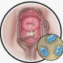

Cervicitis
درمان بر اساس عامل ایجاد کننده متفاوت است ولی اصولا آنتی بیوتیک تجربی جهت پوشش کلامیدیا و گنوره می دهیم.
کلامیدیا
نایسریا گنوره
اپتودیت ترکیب سفتریاکسون و آزیترومایسین رو دیشنهاد داده.
یک نوع بیماری التهابی است که شایع ترین علت آن عفونت های STI می باشد
نکته : در خانم باردار از تجویز فلوروکینولون یا داکسی سیکلین خودداری شود و ترجیحا ارجاع دهید .
نکته : در صورتیکه ولوواژینیت همزمان وجود داشت باید درمان کنیم و اصولا توصیه میشود که رژیم درمانی واژینوز باکتریال تجویز شود ( رجوع شود به واژینیت باکتریال)
نکته : درمان شریک جنسی همزمان انجام شود و تا اتمام مدت درمان از رابطه جنسی خودداری شود
نکته : اجتناب از جسم خارجی و مواد شیمایی محرک مثل تامپون ،دیافراگم ، کرم ها و ... برای جلوگیری از شکست درمان توصیه می شود
علل
▪️نوع حاد = اصولا علل عفونی ( کلامیدیا ، نایسریا گنوره ، هرپس ، تریکوموناس و ...)
▪️نوع مزمن = اصولا در اثر تحریک تماسی یا شیمیایی مثل استفاده از تامپون ، دیافراگم ، کرم ها ، لاتکس و ...
علائم بیماری
✳️ ترشح چرکی زرد-سبز
✳️ دیس پارونی
✳️ خونریزی بعد از مقاربت
✳️ خونریزی intermenstrual
✳️ دیزوری یا اورتریت
نکته: تب و درد شکم و لگن اصولا وجود ندارد و اگر دیدیم به PID شک می کنیم
تشخیص
▫️به صورت بالینی از طریق مشاهده ترشح چرکی و خونریزی بعد از تماس ملایم با سواب
▫️سرویکس ادماتو و اریتماتو
1️⃣ اندومتریت
2️⃣ سیستیت
EP 3️⃣
4️⃣ تومور ادنکسال
Ovarian lesion 5️⃣
6️⃣ کیست تخمدان
7️⃣ کنسر رحم
8️⃣ کنسر سرویکس
9️⃣ انواع واژینیت
🔟 PID
1️⃣1️⃣ انواع دیگر STD
TB 1️⃣2️⃣
1️⃣3️⃣ ضایعات ولو